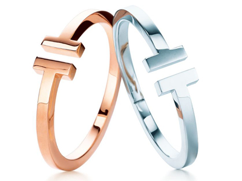

홈 > 브랜드 매거진 > 티파니
티파니
티파니는 주얼리 자체만큼이나 색과 포장, 선물의 의식을 브랜드 자산으로 만든다. 블루 박스와 매장 경험은 제품을 구매하는 순간을 특별한 사건으로 바꾸며, 브랜드의 상징성을 강화한다.
산업 분야 패션·럭셔리 · 공개 등급 매거진 완성 · 브랜드 평가 5 ★

한눈에 보는 브랜드
티파니는 주얼리 자체만큼이나 색과 포장, 선물의 의식을 브랜드 자산으로 만든다. 블루 박스와 매장 경험은 제품을 구매하는 순간을 특별한 사건으로 바꾸며, 브랜드의 상징성을 강화한다.
브랜드 관점
티파니는 주얼리 자체만큼이나 색과 포장, 선물의 의식을 브랜드 자산으로 만든다. 블루 박스와 매장 경험은 제품을 구매하는 순간을 특별한 사건으로 바꾸며, 브랜드의 상징성을 강화한다.
시작과 성장
티파니는 미국 뉴욕에서 작은 팬시 용품 매장으로 시작한 럭셔리 주얼리 브랜드이다. 1837년, '다이아몬드의 왕'이라 불리는 찰스 루이스 티파니(Charles Lewis Tiffany)가 설립한 이후 지속해서 성장했으며 매번 독보적인 주얼리 컬렉션을 선보이고 있다.
브랜드 아이덴티티
프러포즈를 꿈꾸는 여성이라면 티파니는 영원한 로망이다. 다이아몬드 그 자체의 아름다움이 잘 드러난 '티파니 세팅'은 세계 최초로 다이아몬드가 밴드에서 분리된 혁신적인 사건이었다.
또한, 티파니는 1837년 창립 이래 감각적인 주얼리 컬렉션을 선보이며 프러포즈 반지의 대명사로 자리 잡았다. 티파니 고유의 컬러인 '티파니 블루'는 많은 여성을 열광하게 했다.
주얼리 브랜드로는 이례적으로 신비로운 하늘색을 브랜드 컬러로 가지며, 영화 등의 매체를 통해 낭만을 꿈꾸는 여성들의 판타지를 자극하고 있다.
제품과 서비스
대표 제품과 서비스 정보는 편집 검수 후 공개됩니다.
현재 상태
타임라인
BI/CI 변천사
함께 읽을 브랜드
패션·럭셔리 · 편집 검수구찌 패션·럭셔리 · 편집 검수오메가
패션·럭셔리 · 편집 검수오메가 패션·럭셔리 · 자료 기반스와로브스키
패션·럭셔리 · 자료 기반스와로브스키
구찌는 이탈리아의 패션·럭셔리 브랜드로, 소재, 실루엣, 로고, 컬렉션 운영이 취향과 지위 신호를 만드는 영역입니다.
패션·럭셔리 · 편집 검수디젤디젤(Diesel)은 1978년 렌조 로소가 이탈리아 브레간체에서 설립한 데님 중심의 컨템포러리 패션 브랜드다. 도발적이고 실험적인 디자인으로 데님 헤리티지를 재해석...
오메가(OMEGA)는 스위스 스와치 그룹 산하의 럭셔리 시계 제조 브랜드이다.
패션·럭셔리 · 자료 기반스와로브스키스와로브스키(Swarovski)는 1895년 다니엘 스와로브스키가 오스트리아 바텐스에 설립한 크리스탈 제조·럭셔리 브랜드이다.
패션·럭셔리 · 매거진 완성루이비통루이비통은 여행가방에서 출발했지만, 이동의 기능을 럭셔리한 삶의 상징으로 확장했다. 브랜드의 헤리티지는 물건을 담는 도구가 아니라 이동하는 사람의 취향과 지위를 표현...
패션·럭셔리 · 매거진 완성스와치스와치는 시계를 고가의 정밀기기에서 매일 바꿔 착용할 수 있는 패션 언어로 전환했다. 시간을 알려주는 기능보다 색, 그래픽, 컬렉션, 가벼운 가격대가 브랜드 경험의...
패션·럭셔리 · 매거진 완성에르메스에르메스는 속도보다 장인성과 기다림의 가치를 브랜드 경험으로 만든다. 제품은 희소성과 품질을 통해 욕망을 만들지만, 더 깊은 차별성은 쉽게 대체되지 않는 제작 태도와...
패션·럭셔리 · 매거진 완성코치코치는 실용적 가죽 제품을 일상적 럭셔리의 영역으로 끌어올린 브랜드다. 과시적 명품보다 접근 가능한 품질과 라이프스타일 이미지를 통해 오래 쓰는 가방의 감각을 브랜드...